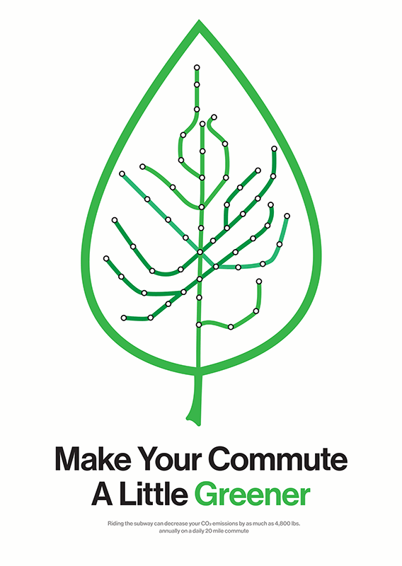

green economies poster
A poster that was designed for the 12th annual Mexico Poster Biennial, with the topic of green economies with a focus on the possitive impact that riding public transportation can have on the environment. I decdided to use a world recognized visual of the subway map and an iconic leaf outline since this was going to be entered into an international contest. This poster was selected within the student works division.